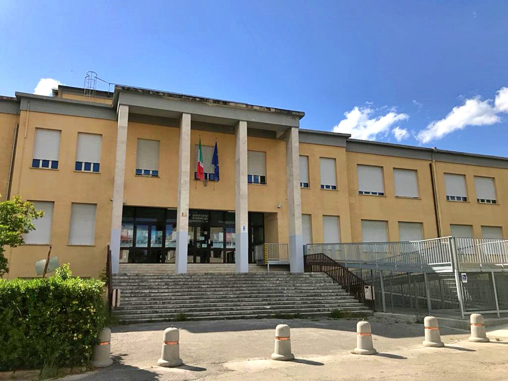
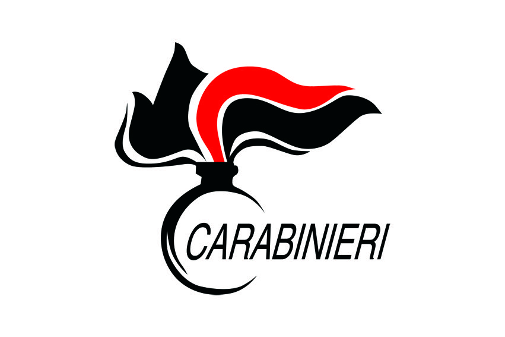
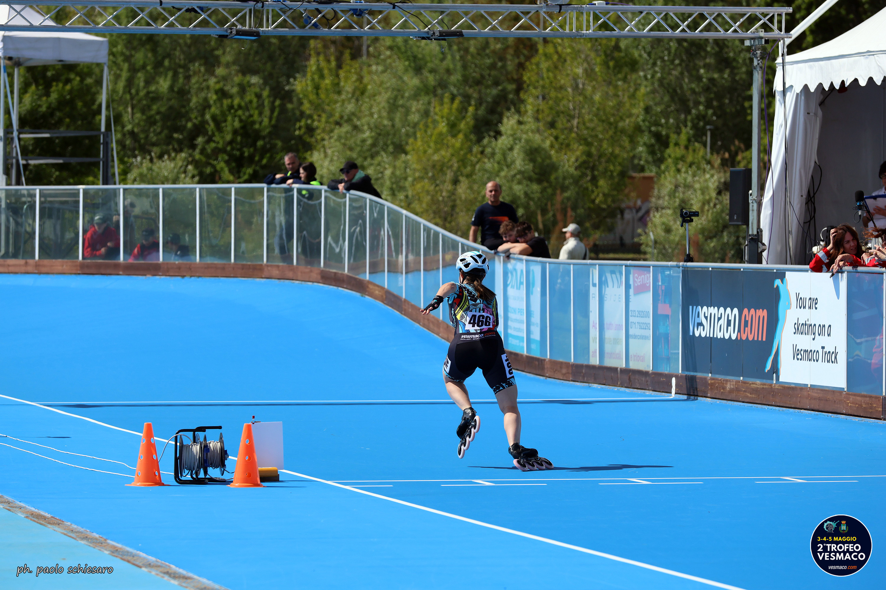

IIS "Marconi Pieralisi" — Jesi
Giulia Cecconi
Studentessa di Informatica — IIS "Marconi Pieralisi", Jesi
Scuola, esperienze, sport, passioni e obiettivi: questo sito racconta un po’ chi sono oggi e chi vorrei diventare domani.
Chi sono
Un po’ di me
Presentazione
Ho 19 anni, vivo a Santa Maria Nuova e frequento il quinto anno dell’IIS “Marconi Pieralisi” di Jesi, indirizzo Informatica.
Mi considero una persona determinata, curiosa e molto attiva: faccio fatica a stare ferma e ho sempre bisogno di avere nuovi obiettivi da raggiungere. Nel tempo ho imparato ad affrontare situazioni difficili con carattere e costanza, qualità che oggi porto sia nello studio sia nella vita quotidiana.
Per me contano molto le persone che mi stanno accanto: la mia famiglia, gli amici più stretti e tutte le persone che in questi anni mi hanno aiutata a crescere. Cerco sempre di dare il massimo in quello che faccio, anche quando significa uscire dalla mia zona di comfort.

Il mio percorso di studi
Dopo le scuole medie ho scelto l’indirizzo Informatica perché mi incuriosiva il mondo della tecnologia e volevo una scuola che mi permettesse di imparare cose pratiche oltre alla teoria. In questi cinque anni ho studiato programmazione, reti, database e sviluppo software, imparando non solo competenze tecniche ma anche il valore del lavoro di squadra e dell’organizzazione.
L’informatica mi ha insegnato soprattutto ad affrontare i problemi con logica e pazienza: spesso dietro a un errore si nasconde una soluzione che va cercata con calma e metodo.
Uno sguardo al futuro
Dopo il diploma vorrei entrare nell’Arma dei Carabinieri e continuare il mio percorso cercando di diventare maresciallo. È un obiettivo che sento molto mio perché unisce disciplina, responsabilità e spirito di servizio.
Allo stesso tempo voglio continuare a crescere personalmente, imparare nuove cose e mettermi alla prova in contesti diversi. Credo che ogni esperienza, anche piccola, possa insegnare qualcosa di importante.

Passioni
Ciò che mi fa stare bene
Oltre allo studio, ci sono attività ed esperienze che hanno avuto un ruolo importante nella mia crescita: lo sport, la fotografia, i viaggi e il lavoro.

Pattinaggio
Per me lo sport non è mai stato solo allenamento. Per molti anni ho praticato pattinaggio corsa a livello agonistico, uno sport che ha occupato gran parte della mia crescita e che mi ha insegnato molto più di quanto immaginassi. Gare, allenamenti, viaggi ogni fine settimana e il rapporto continuo con la squadra mi hanno fatto capire il valore della disciplina, della costanza e del sacrificio.
Non è stato sempre semplice conciliare scuola, vita personale e sport, soprattutto nei periodi più impegnativi, ma proprio queste difficoltà mi hanno aiutata a maturare. Il pattinaggio mi ha insegnato ad affrontare le pressioni, a rialzarmi dopo le delusioni e a vivere ogni traguardo con più consapevolezza. Ancora oggi porto con me il modo di vedere la vita che questo sport mi ha lasciato: imparare a resistere nella fatica, senza smettere di andare avanti.
Fotografia
La fotografia è una passione nata quasi per caso e diventata col tempo qualcosa di molto importante per me. Mi piace catturare momenti spontanei, dettagli e atmosfere che spesso passano inosservati.
Da quando ho iniziato a usare la macchina fotografica con più serietà, ho imparato a osservare le cose in modo diverso e a dare più attenzione ai particolari. Fotografare per me significa conservare emozioni e raccontare storie senza usare parole.
Con il tempo questa passione mi ha portata a diventare anche la fotografa della squadra di calcio del mio paese. È stato strano e bellissimo allo stesso tempo: per anni ho passato i sabati in tribuna a guardare mio fratello e i miei amici giocare, mentre oggi mi ritrovo direttamente a bordo campo a raccontare quei momenti attraverso le mie fotografie. In qualche modo, senza accorgermene, sono passata dall’essere spettatrice a far parte anch’io di ciò che succede in campo.

Viaggi
Mi piace vivere esperienze nuove e uscire dalla mia zona di comfort, soprattutto quando significano crescere e mettermi alla prova. L’estate scorsa ho partecipato a un progetto Erasmus in Irlanda insieme alla scuola, vivendo lì per un mese. È stata una delle esperienze più importanti della mia vita, perché per la prima volta mi sono ritrovata davvero da sola, lontana da casa, dalle abitudini e dalle persone a cui ero abituata.
All’inizio non è stato semplice, ma proprio questo mi ha aiutata a cambiare tanto. Quell’esperienza mi ha insegnato a essere più indipendente, ad adattarmi alle situazioni nuove e a dare valore a cose che spesso si danno per scontate, come gli affetti, il tempo condiviso e la capacità di cavarsela da soli. Tornare a casa dopo quel mese significava essere la stessa persona, ma con uno sguardo completamente diverso sulla vita e su me stessa.
Barista
Da qualche tempo lavoro come barista presso il circolo del mio paese. Questa esperienza mi ha insegnato a relazionarmi con persone molto diverse tra loro, a gestire situazioni impreviste e a lavorare con responsabilità anche nei momenti più impegnativi.
Stare dietro al bancone significa molto più che servire un caffè: significa ascoltare, comunicare, collaborare con gli altri e imparare a mantenere la calma anche quando il locale è pieno. È un'esperienza che mi ha aiutata a diventare più sicura di me stessa e più autonoma.